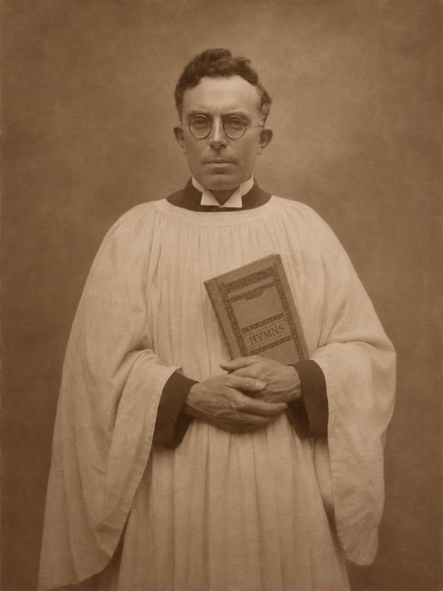
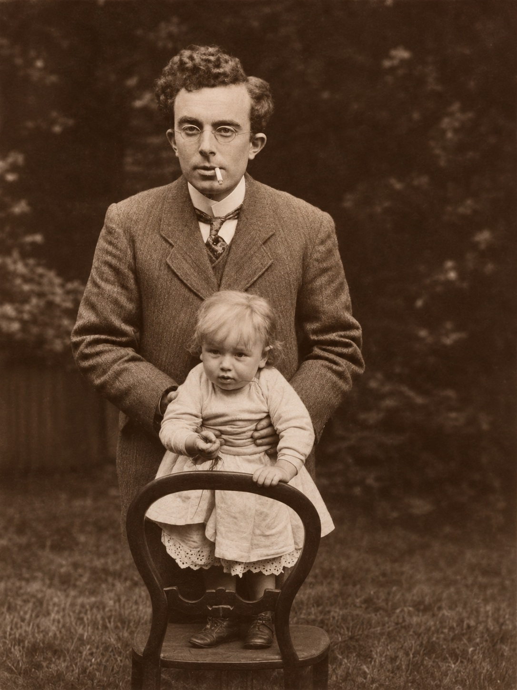
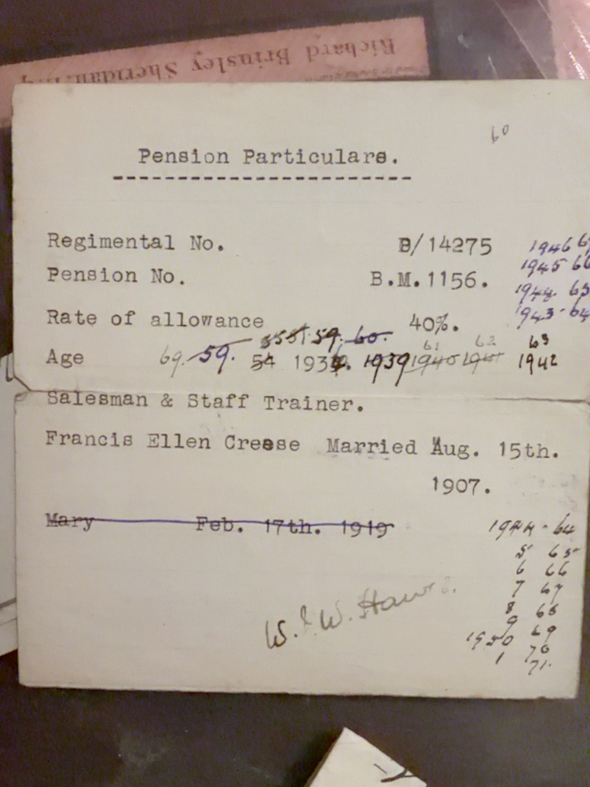
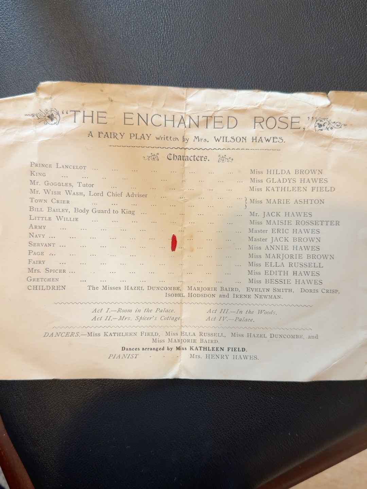

Biography
Choir portrait
A family-held photograph, identified by Antony Greenfield as Walter as a chorister, shows him wearing choir robes and holding a book. The date, church or choir, and location are not yet established. The original photograph and a clearly labelled digital restoration are preserved in the archive.
Work and pension records
The revised family tree describes Walter as a tea expert; earlier family recollection describes clerical work. A family-held Pension Particulars card separately states his occupation as Salesman & Staff Trainer, gives regimental number B/14275 and pension number B.M. 1156, and records a 40% allowance. These descriptions may refer to different periods of his working life.
Marriage
A family-held pension particulars card identifies his spouse as Francis Ellen Creese (spelled Frances in other records) and says they married on 15 August 1907, consistent with the GEDCOM. The original marriage register has not yet been examined.
Children
Family information identifies four children of Walter and Frances: Eric William Valentine (1909), George W. (1911), Gladys Madeline (1913), known as Madeline and called Sally by friends and husbands, and Mary (1919). Birth registrations have been supplied for all four; the earliest index extract does not state a maiden surname.
Unresolved handwritten note
An entry reading Mary, Feb. 17th. 1919 appears crossed out on the pension card. That is compatible with the first-quarter 1919 birth registration, but it cannot be accepted as her exact birthday without corroboration.
Documents & photographs

Original portrait and AI-assisted restoration. Choir and location unconfirmed.
Open photograph →
Original photograph and digitally restored copy, identified by Antony Greenfield.
Open photograph →
Family-held original pension and occupation card
Open record →
Family performers including his son Eric
Open record →References and research
Original evidence is distinguished from GEDCOM assertions and family recollections. Personal details of living descendants are withheld.